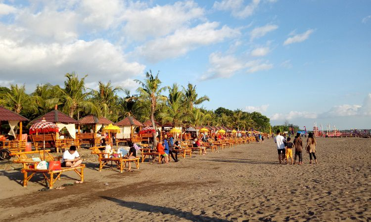
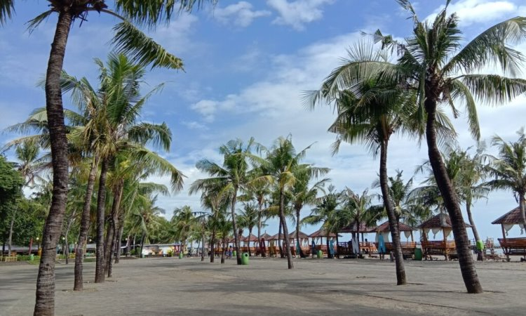
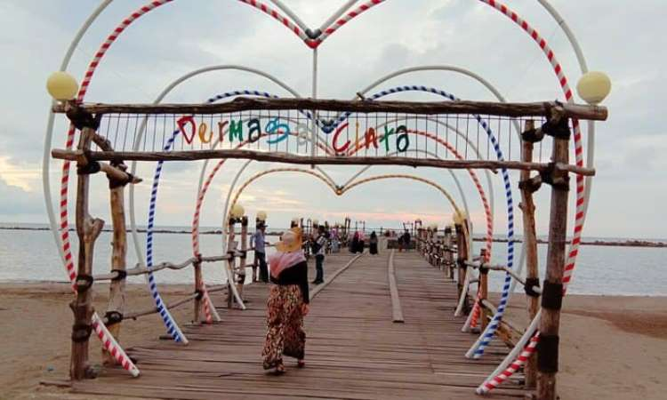
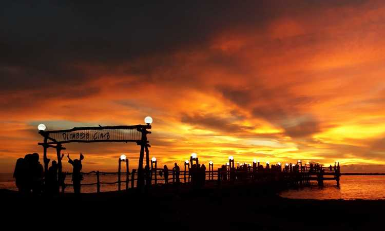

Keindahan yang dimiliki Pantai Akkarena memang tiada duanya. Inilah beberapa hal yang membuat Pantai Akkarena Makassar wajib masuk dalam list wisata Anda.
Siapa yang tidak menyukai sunset? Hampir seluruh orang menyukai pemandangan matahari terbenam. Panorama langit oranye yang mulai menggelap banyak digandrungi oleh pemuda-pemudi. Terlebih lagi jika berlokasi di daerah pantai.
Tentu saja akan menjadi latar terbaik untuk menyaksikan sunset. Lengkap ditemani suara deburan ombak dan duduk diatas pasir-pasir halus atau menyaksikan dari kejauhan.
Salah satu pantai yang memberikan pemandangan terbaik saat sunset tiba adalah Pantai Akkarena. Pantai ini merupakan salah satu pantai yang ada di Makassar dan sedang populer.
Apabila Anda mencari rekomendasi pantai di Makassar, pastinya akan menemukan nama Pantai ini yang sekarang sejajar dengan Pantai Iosari. Pantai yang selalu menjadi tujuan para wisatawan.
Akkarena memungkinkan untuk melakukan segala aktivitas menyenangkan bersama keluarga. Mulai dari bermain di pantai, menikmati wahana-wahana yang disediakan, menyaksikan sunset atau hanya sekedar berjalan-jalan dibibir pantai.
Bisa dibilang pantai ini sangat cocok dikunjungi saat liburan. Namun, jika belum pernah datang kesini maka Anda harus mengetahui terlebih dahulu seluk beluk Pantai indai di Makassar.
Ingin tahu apa saja keistimewaan salah satu obyek wisata kebanggan ibukota Provinsi Sulawesi Selatan ini? Yuk, simak informasi selengkapnya.
1. Rute & Harga Tiket Masuk Pantai Akkarena
Karena pantai ini menjadi salah satu destinasi wisata populer di Makassar, maka akses jalannya pun cukup mudah. Apalagi lokasinya berdekatan dengan pusat kota Makassar menjadikan tempat ini gampang ditemukan wisatawan. Berjarak 10 menit dari pusat kota, Anda bisa berjalan kaki untuk sampai kesini.
Di seberang pantai berdiri GTC Mall yang bisa dijadikan patokan jalan.

Tidak perlu membayar mahal untuk bisa masuk ke Pantai Akkarena. Pada hari Senin sampai Jumat harga tiket masuk yang perlu dibayarkan adalah sebesar Rp 10.000. Sedangkan pada hari weekend akan dikenai biaya sebesar Rp 15.000, tetapi ini masih belum termasuk parkir. Anda perlu menyiapkan uang parkir Rp 5.000 untuk motor dan Rp 10.000 untuk mobil.
Sayangnya, harga tiket masuk terpisah dengan wahana. Jika Anda ingin bermain di wahana maka harus mengeluarkan uang lagi. Kisaran tarif permainan berbeda-beda. Mulai dari Rp 20.000 sampai dengan Rp 25.000 per wahana. Tarif wahana masih terbilang terjangkau di dompet.
Sama seperti pantai pada umumnya, tempat ini dibuka pada pukul 08.00 dan ditutup pada pukul 01.10. Selain itu, Pantai Akkarena selalu buka setiap hari bahkan pada hari libur. Karena weekend selalu menjadi waktu yang paling ramai dikunjungi oleh para wisatawan.
2. Fasilitas yang Tersedia di Pantai Cantik Makassar
Banyak fasilitas yang disediakan di Pantai Akkarena. Mulai dari fasilitas umum seperti area parkir yang luas sehingga tidak perlu kebingungan menaruh kendaraan, kamar mandi yang kebersihannya terjaga, spot tempat duduk di beberapa tempat untuk pengunjung, dan lain sebagainya.

Daya tarik yang paling menonjol dari fasilitas di pantai adalah kesediaan ruang meeting dalam ukuran besar dan kecil. Terdapat pula mushola sebagai tempat beribadah serta persewaan barang-barang pantai seperti ban atau pelampung. Bagi anak-anak yang ingin berenang dapat merental peralatan sesuai kebutuhan.
Selain itu, pantai ini menyediakan dua pintu masuk dan keluar yang masing-masing pintu mempunyai pos penjaga. Di pos tersebutlah tiket yang telah dibeli sewaktu masuk ke pantai harus tetap disimpan sampai akhirnya pulang dan diberikan kepada petugas yang berjaga di pintu keluar.
3. Dermaga Cinta, Ikon dari Pantai Akkarena
Ketika berkunjung ke pantai pastinya memburu spot-spot foto yang dapat dijadikan kenang-kenangan atau diupload ke sosial media. Dermaga cinta menjadi salah satu spot selfie terbaik berlatar belakang jembatan yang mengarah ke laut.
Para wisatawan selalu tidak lupa mengambil foto di dermaga ini sebagai ikon Pantai Akkarena.

Dermaga ini mempunyai ukuran panjang sekitar 150 meter dengan lebar 5 meter. Selain digunakan sebagai spot selfie, dermaga ini juga berfungsi sebagai tempat bersandarnya kapal-kapal berukuran kecil sampai sedang.
Berlatar belakang senja temaram yang menambah romantis suasana. Mengesampingkan rumor yang beredar, tempat ini cukup bagus untuk mengabadikan momen.
4. Lokasi Event-Event Terbaik di Makassar

Biasanya, banyak acara digelar di pantai ini sebagai tuan rumahnya. Pertunjukkan seperti festival musik yang digelar oleh band-band atau saat menjelang malam pergantian tahun. Terdapat event pesta berkemah di pantai dimana para wisatawan dapat menikmati wisata kuliner, api unggun, hingga pesta kembang api yang meriah.
Event setahun sekali yang rutin dilaksanakan di Pantai Akkarena yaitu festival layang-layang yang memakai konsep permainan tradisional. Festival ini menampilkan berbagai dimensi jenis layangan. Para anak-anak hingga dewasa dapat berpartisipasi dalam event tersebut.
Kegiatan tiap tahun ini sudah masuk ke dalam kalender acara dari Dinas Pariwisata kota Makassar.
Bagi para wisatawan yang perlu mengisi perut sehabis bermain di pantai, tinggal pergi ke area taman pantai.
Disana tersedia beberapa food court yang menyediakan aneka menu makanan. Mulai dari makanan lokal Makassar hingga internasional.